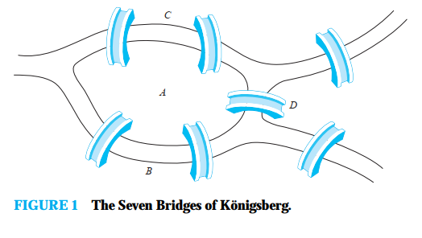
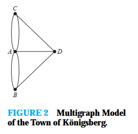
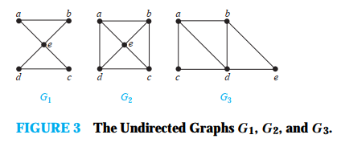
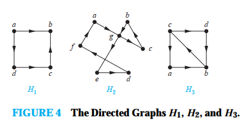
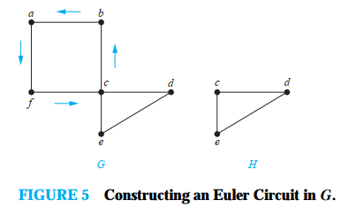
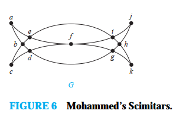
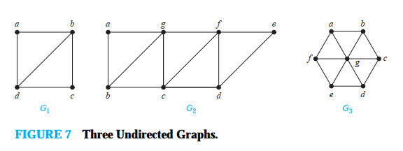
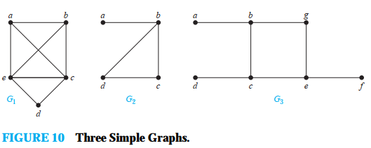

Дали може да се патува долж ребрата почнувајки од некој јазол и враќајки се на него поминувајки го секое ребро точно еднаш. Слично е и прашањето дали можеме да се движиме долж ребрата и при тоа да го посетиме секој јазол точно еднаш. На прв поглед прашањате се слични, на првото кое прашува дали графот има Ојлеров циклус може реалтивнио лесно да се одговори преку утврдувањето на степените на јазлите на графот, додека на второто кое прашува дали графот има Хамилтонов циклус е многу тешко. И двете прашања имаат многу практични апликации.
Ојлеров пат и Ојлеров циклус
Градот Königsberg, Prussia (сега Калининград и дел на Русија), е поделен не четри дела со бреговите на реката Pregel. Овие четри дела се состојат од два региона на обалата на реката Pregel, островот Kneiphof, и регионот помеѓу гранки на реката Pregel. Овие региони, во осумнаестиот век биле поврзани со седум моста. Сликата 1 ги прикажува овие мостови и региони.
Жителите на градот се прашувале дали е можно да се тргне од некоја локација на градот, да се поминат сите мостови само еднаш и да се врати на почетната локација. Проблемот го решил шбајцарскиот математичар Ојлер (Leonhard Euler). Неговото решение н апроблемот е прва примена на теоријата на граф-ови. Ојлр проблемот го разгледувал користејки мултиграф каде регионите ги претставил со јазли а мостовите со ребра. Овој мултиграф е претсатавен на сликата 2.
Проблемот на патувањето преку секој мост без да се помине преку било кој мост повеќе од еднаш може да се постави на следниот начин: постои ли едноставен циклус во овој мултиграф кој го содржи секое ребро.
Дефиниција 1
Ојлеров циклус во графот `G` е едноставен циклус кој го содржи секој јазол на графот. Ојлеров пат во графот `G` е едноставен пат кој го содржи секое ребро од графот.
Примерот 1 и примерот 2 го илустрираат концептот на Ојлеровиот циклус и Ојлеровиот пат.
Пример 1. Кои од графовите на сликата 3 имаат Ојлеров циклус? Од тие што немаат Ојлеров циклус, кои имаат Ојлеров пат?
Решение: Графот `G_1` има ојлеров циклус, на пример `a, e, c, d, e, b, a`. Ниту графот `G_2` ниту графот `G_3` има Ојлеров циклус. Но графот `G_3` има ојлеров пат, имено `a, c, d, e, b, d, a, b`. Графот `G_2` нема Ојлеров пат.
Пример 2. Кои од ојрентираните графови на сликата 4 имаат Ојлеров циклус? Од тие што немаат Ојлеров циклус, кои имаат Ојлеров пат?
Решение: Графот `H_2` има Ојлеров циклус, на пример `a, g, c, b, g, e, d, f, a`. Ниту графот `H_1` и `H_3` има Ојлеров циклус. Но графот `H_3` има Ојлеров пат, имено `c, a, b, c, d, b`. Графот `H_1` нема Oјлеров пат.
Потребни и доволни улови за постоење на Oјлеров циклус
Постои едноставен критериум за одредување дали еден мултиграф има Ојлеров циклус или Ојлеров пат.
Кога еден сврзан мултиграф има Ојлеров циклус, она што може да се покаже е дека секој јазол мора да има парен степен. За да го покажеме ова нека Ојлеровиот пат отпочнува со јазелот `a` и продолжува со ребро сврзано со јазелот `a`, да речеме реброто `{a, b}`. Реброто `{a, b}` додава еден на степенот `deg(a)`. Секој пат кога циклусот поминува низ јазол тој додава два на степенот на јазолот, бидејки циклусот влегува преку ребро поврзано со тој јазол и излегува преку друго ребро. На крајот, циклусот завршува онаму каде што и почнал, додавајки еден на степенот на јазолот `a`. Поради ова степенот на `a` морада е парен, циклусот го зголемува степенот за еден кога почнува, еден кога завршува и два секогаш кога поминува низ `a` (ако поминува). Јазлите различни од `a` имаат парен степен бидејки циклусот додава два на степенот секој пат кога поминува низ јазолот. Од овде може да се заклучи дека ако графот има Ојлеров циклус, тогаш секој јазол мора да има парен степен.
Следното прашање е дали овој потребен услов е и доволен за постоење на Ојлеров циклус? Односно дали постои Ојлеров циклус во сврзан мултиграф ако сите јазли се со парен степен. На ова прашање може да се одговори потврдно ако конструираме циклус.
Нека графот `G` е сврзен граф со најмалку два јазли и степенот на секој агол е парен. Ќе формираме едноставен граф кој почнува од случајно одбран јазол од графот `G`, и ќе го градиме додавајки ребро по ребро. Нека `x_0=a`. Прво случајно ќе го одбереме реброто `{x_0, x_1}` кое треба да е сврзано со јазолот `a`, што е можно бидејки графот е сврзан. Продолжуваме со градење на едноставен пат`{x_0, x_1}, {x_1, x_2}, . . . , {x_(n−1), x_n}`, додавајки ребро по ребро се додека не можеме да додадеме ново ребро. Ова се случува доаѓаме до јазол чии ребра веќе сме ги вклучиле во патот. На пример во графот `G` од сликата 5 почнуваме од јазелот `a` и ги одбираме ребрата `{a, f}, {f, c}, {c, b},` и `{b, a`}.
Патот кој го конструираме мора да заврши бидејки графот има конечен број на ребра, така да е гарантирано дека ќе дојдеме до јазол каде не е можно да се додаде ребро на патот. Патот отопчнува во јазелот `a` со реброто со форма `{a, x}`, а и покажавме дека мора да заврши со ребро со форма `{y, a}`. За да покажеме дека патот мора да заврши во јазелот `a`, треба да не се заборави дека секогаш кога патот поминува низ јазол со парен степен се користи само еден степен за да патот влезе во јазолот а бидејки степенот е најмалку два, најмалку едно ребро останува за патот да го напушти јазолот. И уште повеќе секогаш кога патот влегува и напушта јазол со парен степен остануав парен степен на ребра кои не се употребени во патот. Според ова кога го формираме патот, секогаш кога влегуваме во јазол различен од `a` можеме да го напуштиме. Ова значи дека патот може да заврши само во јазолот `a`. Исто така треба да се забележи дека патот кој го конструираме може да ги употреби сите ребра или може да не ги употреби сите ребра во зависност кога се враќаме до јазолот `a`.
Ојлеров циклус е конструиран ако се употребени сите ребра. Да го земеме во предвид подграфот `H` добиен од графот `G` со бришење на веќе употребени ребра и јазли кои не се сврзани со преостанатите ребра. Кога ќе го избришеме циклусот `a, f, c, b, a` од графот прикажан на слика 5, го добиваме подграфот означен со `H`.
Бидејки графот `G` е сврзан, подграфот `H` има најмалку еден јазол поврзан со циклусот кој го избришавме. Нека јазолот `w` е ваков јазол (во нашиот случај тоа е јазолот `c`).
Секој јазол во подграфот `H` има парен степен (бидејки во графот `G` сите јазли имаа парен степен, и за секој јазол, паровите на јазлите поврзани со овој јазол се избришани за да се формира графот `H`). Треба да се забележи дека графот `H` може да биде несврзан. Почнувајки од `w`, се конструира едноставен граф во `H` со избор на ребра се додека е можно. Овој пат мора да заврши во `w`. На пример, на сликата 5, `c, d, e, c` е пат во графот `H`. Понатаму, формираме циклус во графот `G` со спојување на циклусот во графот `H` со оргиналниот циклус во `G` (ова може да се направи бидејки `w` е еден од јазлите во циклусот). Кога ова ќе се направи во графот на сликата 5 се добива циклусот `a, f, c, d, e, c, b, a`.
Овој процес се продолжува додека не се искористат сите ребра (Процесот мора да продолжи бидејки бројот на ребра во графот е конечен). Овој процес дава Ојлеров циклус. Конструкцијата покажува дека ако јазлите на сврзан мултиграф се со парен степен, тогаш графот има Ојлеров циклус. Сето ова се сумира во Теоремата 1.
Теорема 1
Сврзан мултиграф со најмалку два јазли има Ојлеров циклус ако и само ако секој од јазлите има парен број на степен.
Сега може да се реши проблемот на мостовите на Königsberg. Бидејки мултиграфот кој ги преставува овие мостови, прикажан на сликата 2, има четри јазли со непарен степен истиот нема Ојлеров циклус. Односно не постои начин да се тргне од една точка, да се поминат сите мостови само едн аш и да се врати во стартната точка.
Долниот алгоритам ја дава процедурата за одредување на Ојлеровиот циклус според Теоремата 1. .
- Се конструира некој циклус во `G`, почнувајки од произволно одбран јазол со ребра така додадени да се формира пат кој се враќа на почетниот јазол.
- Бидејќи циклусот не мора да ги помине сите ребра, може да останат ребра.
- Од останатите ребра пак се прави циклус од јазол кое веќе го има во претходниот циклус. Тој се лепи до претходниот циклус на местото на темето кое се наоѓа во претходниот циклус
- Ова се повторува се додека не се истрошат сите ребра.
Алгоритамот е ефикасен начин како да се одреди Ојлеровит циклус во поврзан мултиграф каде сите јазли се со парен степен. Комплексност на алгоритамот е `O(abs(E))` бидејки секое ребро се поминува точно еднаш.
Примерот 3 покажува како Ојлеровиот циклус и Ојлеровиот пат може да се употреби да се решат некои типови на загатки.
Пример 3. Да се нацрта фигурта на сликата 6 без подигање на моливот од хартијата. Задачата се решава со користење на Ојлеров циклус и Ојлеров пат.
Решение: Задачата може да се реши бидејки фигурата има Ојлеров циклус. Фигурата има Ојлеров циклус бидејки сите јазли имаат парен степен. Со помош на алгоритамот ќе го конструираме Ојлеровиот циклус. Прво ќе ги формираме циклусот `a, b, d, c, b, e, i, f, e, a`. Подграфот `H` го добиваме со бришење на ребрата во овој циклус и сите јазли кои остануваат изолирани кога овие ребра се бришат. Сега формираме циклус `d, g, h, j, i, h, k, g, f, d` во подграфот `H`. Со формирањето на овој граф сите јазли од графот `G` се употребени. Со спојување на овој нов циклус со првиот циклус се добива Ојлеровиот пат `a, b, d, g, h, j, i, h, k, g, f, d, c, b, e, i, f, e, a`. Овој циклус го одредува начинот како да се нацрта фигурата без да се подигне моливот од хартијата.
Постои и друг алгоритам за конструирање на Ојлеров циклус, (Fleury’s algorithm), е објаснет во воведот на вежбата 50.
Сега ќе покажеме дека сврзан мултиграф има Ојлеров пат (ама не и Ојлеров циклус) ако и само ако графот има два јазли со непарен степен. Прво да претпоставиме дека сврзаниот мултиграф има Ојлеров пат од јазолот `a` до јазолот `b`, но не и Ојлеров циклус. Првото ребро на патат додава еден на степенот на јазолот `a`. Додавање на два на степенот на јазелот `a` е секој пат кога патот поминува низ јазолот `a`. Последното ребро од патот додава еден на степенот од `b`. Секогаш кога патот поминува низ јазелот `b` се додава два на степенот. Според ова јазлите `a` и `b` имаат непарен степен. Сите други јазли имаат парен степен бидејки патот додава два на степенот на јазолот кога поминува низ него.
Сега да го разгледаме обратниот случај. Да претпоставиме дека еден граф има точно два јазли со непарен степен, еве нека се `a` и `b`. Да разгледаме еден поголем граф формиран од оргинален граф со додавање на ребро `{a, b}`. Секој јазол од овој поголем граф има парен степен, па постои Ојлеров циклус. Отстранувањето на новото ребро прави Ојлеров пат во оргиналниот граф. Овие резултати се сумирани во теоремата 2.
Теорема 2
Сврзан мултиграф има Oјлеров пат но не и Ојлеров циклус ако и само ако има точно два јазли со непарен степен.
Пример 4. Кој граф прикажан на сликата 7 има Ојлеров пат.
Решение: Графот `G_1` содржи точно два јазли со непарен степен, `b` и `d`. Од тука, има Ојлеров пат кој мора да ги има јазлите `b` и `d` како крајни точки. Еден ваков ојлеров пат е `d, a, b, c, d, b`. Слично графот `G_2` има точно два јазли со непарен степен, `b` и `d`. Од тука и тој има Ојлеров пат кој мора да ги има `b` и `d` како крајни точки. Еден ваков Ојлеров пат е `b, a, g, f, e, d, c, g, b, c, f, d`. Графот `G_3` нема Ојлеров пат бидејки има шест јазли со непарен степен.
Хамилтонов пат
Ги одредивме потребните и доволните услови за постоење на пат и циклус кој ги содржи сите ребра на еден мултиграф точно еднаш. Сега, прашањето е дали истото може да се направи и за едноставен пат и циклус кој ги содржи сите јазли од графот точно еднаш.
Дефиниција 2
Едноставен пат во графот `G` кој поминува низ секој јазол точно еднаш се нарекува Хамилтонов пат. Односно едноставниот пат `x_0, x_1, . . . , x_(n−1),x_n` во графот `G = (V, E)` е Хамилтонов пат ако `V = {x_0, x_1, . . . , x_(n−1), x_n}` и `x_i != x_j` за `0 ≤ i < j ≤ n` , и едноставниот пат `x_0, x_1, . . . , x_(n−1), x_n, x_0` (со `n> 0`) е Хамилтонов циклус ако `x_0, x_1, . . . , x_(n−1), x_n` е Хамилтонов пат.
Пример 6. Кој од едноставните графови на сликата 10 има Хамилтонов циклус или ако не Хамилтонов пат?
Решение: Грфаот `G_1` има Хамилтонов циклус: `a, b, c, d, e, a`. Графот `G_2` нема Хамилтонов циклус (секој циклус кој ги содржи сите јазли мора да го содржи реброто `{a, b}` два пати, но има Хамилтонов пат (a, b, c, d). Графот `G_3` нема ниту Хамилтонов циклус ниту Хамилтонов пат, бидејки секој пат кој ги содржи сите јазли мора да ги содржи едно од ребрата `{a, b}, {e, f }, и {c, d}` повеќе од еднаш.
Пример 7. Да се покаже дека `K_n` има Хамилтонов циклус кога `n >= 3`
Решение: Може да се формира Хамилтонов циклус во графот `K_n` почнувајки од било кој јазол. Ваков циклус може да добие одејки кон било кој јазол по избор, се додека патот почнува и завршува во ист јазол и поминува низ секој јазол само еднаш. Ова е можно бидејки во графот `K_n` има ребра помеѓу било кои два јазли.
---------- EOP ----------